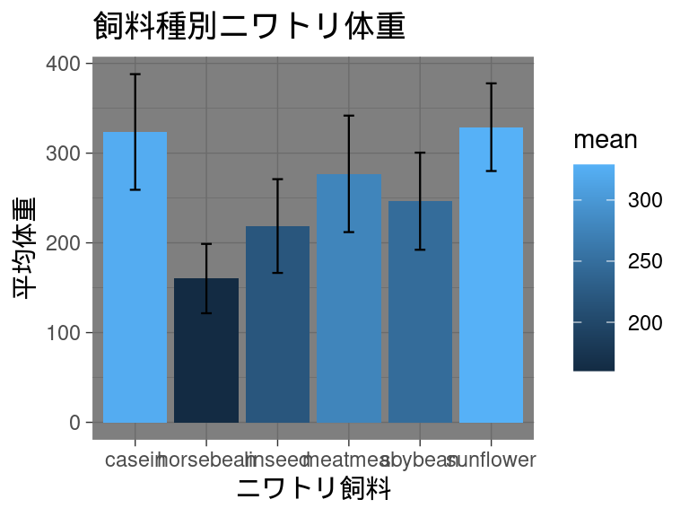

ggplot2テーマの自作
備忘録
R
ggplot2
ggplot2で作成するグラフのテーマを自作する。（執筆途中）
今回は、この棒グラフのテーマを変更していきます。
デフォルトで用意されたテーマ
ggplot2では既にtheme_gray(), theme_bw(), theme_linedraw(), theme_light(), theme_dark(), theme_minimal, theme_classic(), theme_void(), theme_test()の９つのテーマが用意されており、デフォルトでは`theme_bw()が適用されています。
theme_gray
theme_bw
theme_linedraw

theme_light
theme_dark

theme_minimal
theme_classic
theme_void
theme_test
テーマの自作
自作のテーマを作るには、適当な変数に指定したいテーマの要素を書き込むだけです。具体的には下のように、theme()を書き込みます。作成したテーマはデフォルトのテーマと同じように使うことができます。
あるテーマに別のテーマを重ねることもできます。
theme_costom <- theme(
# ここに指定しい要素を書き込んでいきます。
# axis.line = ...
)
# いつも通り指定することで適用できます。
plot <- plot + theme_costom # これでplotにカスタムテーマが適用される。きまり
設定するそれぞれの要素には、element_blank()かelement_text()か、element_line()か、element_rect()のいずれかを指定します。その要素をなくしたい場合（何も表示したくない場合）はelement_blank()を指定します。
| 削除 | element_blank() |
||
| テキスト | element_text() |
・family・ face・ colour・ size・ lineheight・ hjust・ vjust・ angle・ margin・ debug |
フォント 書体（ plain, italic, bold, bold.italic）文字色 文字サイズ 行の高さ 水平方向の位置（0: 左揃え, 0.5: 中央揃え, 1: 右揃え） 垂直方向の位置（0: 下揃え, 0.5: 中央揃え, 1: 上揃え） 文字角度 マージン デバッグ |
| 線 | element_line() |
・color・ linewidth・ linetype・ lineend |
線の色 線の幅 線のスタイル（0から6で指定） 線末端のスタイル（ round, butt, square） |
| 四角形 | element_rect() |
・fill・ color・ linewidth・ linetype |
塗りつぶし色 枠線の色 枠線の幅 枠線のスタイル |
指定する要素
非常に長くなり見づらいですが、themeの中には以下のような要素を設定することができます。
theme(
title, # タイトル
aspect.ratio, # 縦横比（1:正方形, 0.5:横:縦=2:1の長方形）
axis.title, # 軸タイトル
axis.title.x, # x軸タイトル
axis.title.x.top,
axis.title.x.bottom,
axis.title.y, # y軸タイトル
axis.title.y.left,
axis.title.y.right,
axis.text, # 目盛りのテキスト
axis.text.x,
axis.text.x.top,
axis.text.x.bottom,
axis.text.y,
axis.text.y.left,
axis.text.y.right,
axis.text.theta,
axis.text.r,
axis.ticks, # 目盛り
axis.ticks.x,
axis.ticks.x.top,
axis.ticks.x.bottom,
axis.ticks.y,
axis.ticks.y.left,
axis.ticks.y.right,
axis.ticks.theta,
axis.ticks.r,
axis.minor.ticks.x.top,
axis.minor.ticks.x.bottom,
axis.minor.ticks.y.left,
axis.minor.ticks.y.right,
axis.minor.ticks.theta,
axis.minor.ticks.r,
axis.ticks.length,
axis.ticks.length.x,
axis.ticks.length.x.top,
axis.ticks.length.x.bottom,
axis.ticks.length.y,
axis.ticks.length.y.left,
axis.ticks.length.y.right,
axis.ticks.length.theta,
axis.ticks.length.r,
axis.minor.ticks.length,
axis.minor.ticks.length.x,
axis.minor.ticks.length.x.top,
axis.minor.ticks.length.x.bottom,
axis.minor.ticks.length.y,
axis.minor.ticks.length.y.left,
axis.minor.ticks.length.y.right,
axis.minor.ticks.length.theta,
axis.minor.ticks.length.r,
axis.line, # 軸の線
axis.line.x,
axis.line.x.top,
axis.line.x.bottom,
axis.line.y,
axis.line.y.left,
axis.line.y.right,
axis.line.theta,
axis.line.r,
legend.background, # 凡例の背景
legend.margin,
legend.spacing,
legend.spacing.x,
legend.spacing.y,
legend.key,
legend.key.size,
legend.key.height,
legend.key.width,
legend.key.spacing,
legend.key.spacing.x,
legend.key.spacing.y,
legend.frame,
legend.ticks,
legend.ticks.length,
legend.axis.line,
legend.text,
legend.text.position,
legend.title,
legend.title.position,
legend.position,
legend.position.inside,
legend.direction,
legend.byrow,
legend.justification,
legend.justification.top,
legend.justification.bottom,
legend.justification.left,
legend.justification.right,
legend.justification.inside,
legend.location,
legend.box,
legend.box.just,
legend.box.margin,
legend.box.background,
legend.box.spacing,
panel.background,
panel.border,
panel.spacing,
panel.spacing.x,
panel.spacing.y,
panel.grid,
panel.grid.major,
panel.grid.minor,
panel.grid.major.x,
panel.grid.major.y,
panel.grid.minor.x,
panel.grid.minor.y,
panel.ontop,
plot.background,
plot.title,
plot.title.position,
plot.subtitle,
plot.caption,
plot.caption.position,
plot.tag,
plot.tag.position,
plot.tag.location,
plot.margin,
strip.background,
strip.background.x,
strip.background.y,
strip.clip,
strip.placement,
strip.text,
strip.text.x,
strip.text.x.bottom,
strip.text.x.top,
strip.text.y,
strip.text.y.left,
strip.text.y.right,
strip.switch.pad.grid,
strip.switch.pad.wrap,
complete = FALSE,
validate = TRUE
)